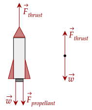

From Newton's second law, the Law of Acceleration, we get that an acceleration means there is a net force, and a net force means there is an acceleration.
In our study of kinematics, we noted one type of motion is a particle in free fall, and more generally projectiles. We noted that they have a gravitational acceleration . By Newton's second law, there is a force causing this acceleration.
One may notice that we don't call this force "gravity". This is because this force is different from the fundamental force which is actually
This is more seen in the equation to compute the weight. Using the formula for force, coming from Newton's second law gives us this.
Let's analyze the units of weight and mass. Since weight is a force, it is written in Newtons. We defined mass to be written in kilograms. This shows a fundamental truth about weight and mass.
Weight is not mass.
As said before, weight can be a measure of how strong the gravitational force is. In the formula above, we see that the gravity is part of the equation. This means that varying gravity means the weight varies. For example, your weight on the moon is about one sixth that of Earth because the gravity on the moon (1.67m/s²) is one sixth that of earth (9.8m/s²).

On the contrary, mass is an intrinsic part of an object that doesn't change no matter what the gravitational force is. Even if you're on the moon or on the Earth, your mass will still be constant.
False. Mass and weight are not the same physical quantity; one shows the strength of the gravitational pull, the other is a quantity of inertia.
True. Mass is an intrinsic part of an object. You need two objects to determine weight, as gravity needs two objects. For example, a box and the Earth.
True. In the equation, as mass goes up, the weight goes up.
False. Mass is constant, no matter where the object is. However, weight varies based on the location and gravitational pull.
Far away from any celestial body, the astronaut practically doesn't feel any gravitational pull; she is weightless, or has no weight. Meanwhile, her mass is still 70 kg.
On Earth, where the gravitational acceleration is 9.8m/s², his weight is the following.
On Mars, his weight is a little lower due to the lower gravity.
In interplanetary space, there is no gravity pulling him, thus he is weightless. In all of his locations, his mass is constant at 75.0kg.
The gravitational acceleration we experience accelerates us quite fast. This also means that we have a fair amount of weight.
With this, sometimes we combat weight in order to go higher, or to slow us down. These forces that slow things down are collectively called
To get the weight, we need the mass. Thankfully, we have the total acceleration and the force, so we can get the mass by rearranging equations. We note that there are two thrusters so we should double the force.
We get the mass is 121,739.13kg, or around kg. Now, we can easily get the weight by just using our equation.
This gives us the weight is around N.
Its important to recall that a force is a vector; meaning that it needs direction. Usually, we don't need it; we only need the magnitude.
However, if we do, like for example if there are multiple forces, one has to choose what direction is positive and negative. For simplicity, let's use the system we used for free fall: going up is positive.
Here's a fun fact: a rocket can push towards the sky because of Newton's third law. The engine burns fuel and throws that fuel out. Throwing that fuel out (called the propellant) pushes the fuel, and by Newton's third law, the fuel pushes the rocket back.

If the rocket is hovering over the launch pad, that means it counteracts the weight. In other words, the net force of the thrust and the weight is zero. We can write this equation like this, setting weight as negative as it is going down.
The weight is simple enough.
Knowing the net force is zero, we can get the thrust quite easily.
This shows that the thrust is equal to the weight if the rocket is just hovering. Makes sense; by the Law of Inertia, if it is at rest, all the forces balance out. For the 18m/s² scenario, there is now a net force.
Thus, we solve for thrust again.
To get the speed when we hit he bottom, we need how fast the elevator speeds up while falling. In other words, we need the acceleration. To get that, we need the net force.
We have two forces; the weight, which we set as negative as it is pulling downwards, and the retarding force pushing upward. Writing the two gives us this equation.
We know the retarding force. The weight is simple enough to compute.
We can now get the acceleration. Plugging in, we get the net force.
We can now get the acceleration.
Now, moving away from our dynamics, we fall back to our kinematic equations. Instead of the gravitational acceleration, we have to use this new, slighlty slowed down acceleration.
The first part is getting the time to fall down 72m.
We get the positive time solution to be 4.39s. Finally, we get the speed by noting the initial velocity is 0m/s.
Finally, the velocity is −32.89m/s.
You may have heard the term weightlessness being thrown around in this tutorial thus far. From the word itself, weightlessness is the feeling that one has no weight. An example of this is people in space, who can float.
Things being heavy is because of their weight. An object with a high mass would have a high weight on Earth, and would need a lot of force to move.
In space however, there is little to no weight as there is little to no gravity. Thus, it isn't heavy. However, it still contains a lot of mass (about 680 kg), thus it is really hard to move. Thus, it is massive.
What does it mean to have weight? While we have weight, we can't feel it ourselves. To feel our weight, we have to rely on other objects to apply force on us, by Newton's third law. This force is called the